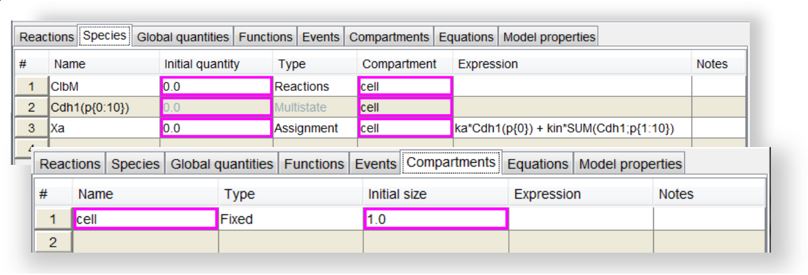
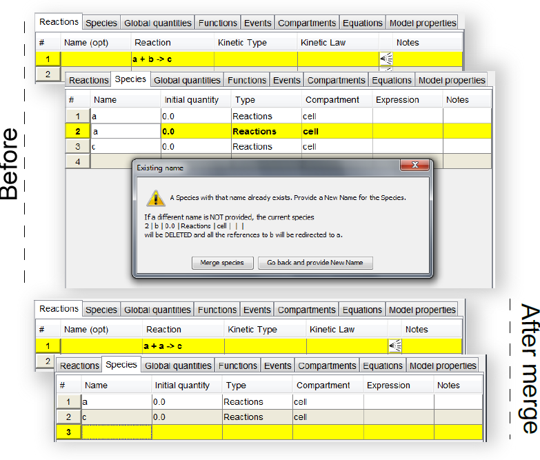
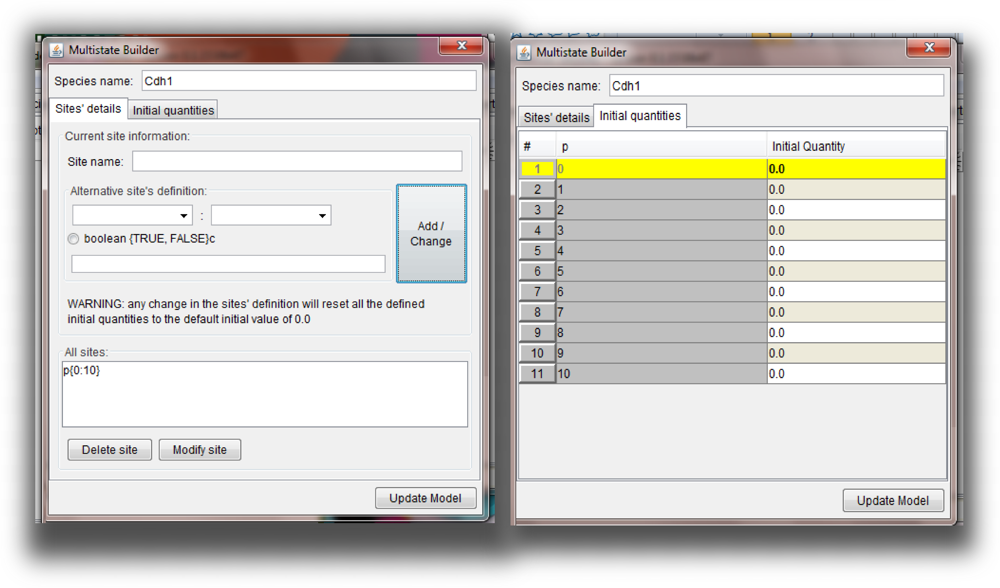
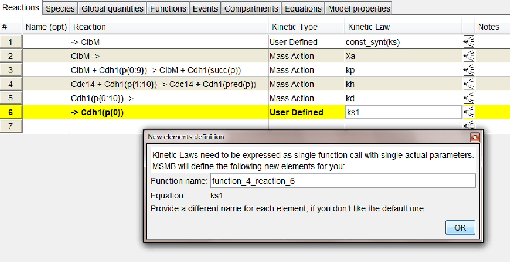
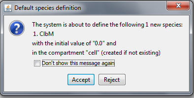
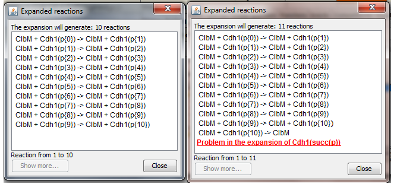
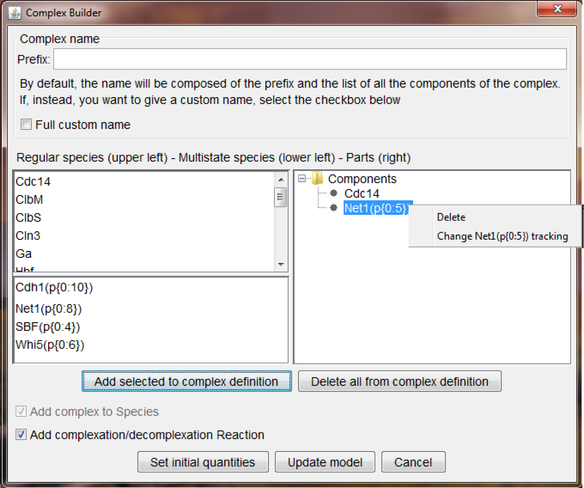
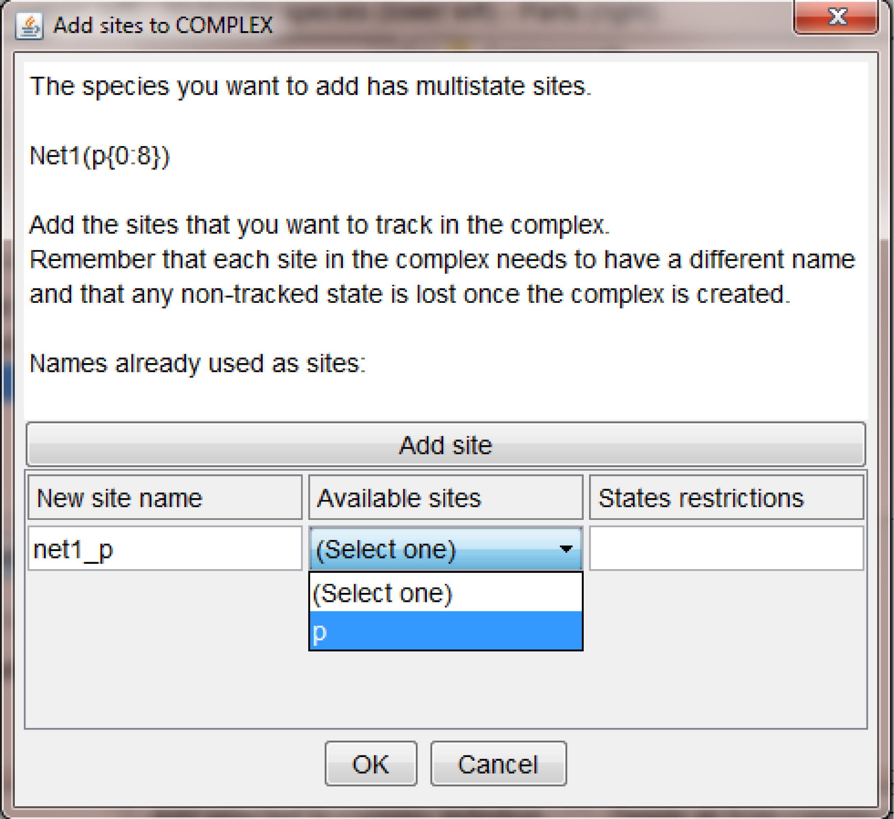
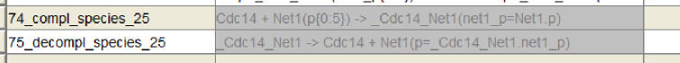
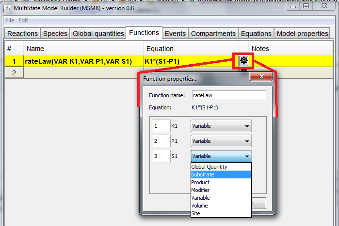

In this section:
Species, Compartments and Global quantities
One of the first steps in writing a model in MSMB is defining the species that are involved in the system.
Note that, as stated in the introduction, we wanted to build a tool that leaves the user free to follow his/her own "stream of consciousness" in writing the model, without forcing a specific order in the definition of the different elements. This means that the definition of the Species or Compartments can happen in a later stage and the user can start defining the model from the Reactions table. For the sake of this document we just follow one of the possible modeling paths.
All the information related to a species definition is collected in the tabs called
Species and
Compartments (Figure below).

Screenshot of Species and Compartment tables.
Several species have been defined in the
Species table. Some cells have a colored border because they contain default values added by the tool. The user can acknowledge those values by right-clicking on a cell and selecting the "Acknowledge default value" option. Otherwise the user can simply re-edit the value contained in the cell. The
Compartment table is also shown with values in the automatically filled cells.
Our tool offers some autocompletion options for different parts of the model (See Section
Preferences for more details) so, in this specific case, if the autocompletion option is active and the user types the name of the species in the 'Name' column, other fields (like initial quantity, type, compartment) are automatically filled with some default values (that the user can easily change if they are not what s/he wanted).
Species can also be automatically defined by the tool when the user types Reactions (see Section
Reactions).
Name column
The name of a species should start with a letter and then contain only letters, numbers and _: names with any other symbol will be accepted, but once the user hit "Enter" or selects another cell, the name will be automatically surrounded by quotes symbols ("). The quotes will then disappear if the user tries to edit the name cell again, but the internal value for the name of that species will be always quoted.
Whenever any mathematical expression refer to a species whose name contain symbols or spaces, it is up to the user to quote this reference in the proper way. Failing to do so can generate parsing errors and/or questionable interpretation of the final expression generated by the tool. This is why we highly encourage users to use names that contains only letters, numbers and and _
When the user enters a name for a new species, MSMB performs some consistency checks: since the name should be unique (in a specific compartment), if another species already exists with that configuration, a pop-up window is prompted to the user and s/he will have to decide what to do next: go back and use a different name or "merge" the species with the existing one (Figure below). This "merging" operation can happen also if the user tries to rename a species with a name of another existing species.

The upper part of the figure (Before) shows what happens if the user tries to rename the second species (originally
b) to
a, but
a already exists. The tool displays a message asking what the user actually wants to do: go back and provide a fresh new name or merge the old
b species to
a. The effect of the "merge" operation is shown in the lower part of the figure (After): the reaction previously pointing to
b is now referring only to
a, and the
b species disappeared from the
Species table).
The "merging" operation affects the entire model because the tool will delete the species that has been renamed and will redirect all the existing references to that species to the new species: so if the renamed species was used in reactions, expressions, etc. all those instances will now point to the merged entity.
The impact of this operation can be massive because a species can be used in many expressions and reactions so it is an operation that should be used carefully.
Similar rules and conventions about what is accepted in the
Name column are also applicable for the
Global quantities and
Compartments table.
Multistate naming
If the name of the species follows the syntax of a multistate species (see Section
Multistate Species and Reactions syntax for details) then a multistate species is added to the model. For this kind of species, the initial value and type field will not be directly editable because the single entry in the table is actually describing a group of single state species (whose initial quantities can be independently defined). Double click on any of those inactive fields will open the "Multistate builder" window, in which the user can specify the initial value of each single different state of the multistate species (Figure below). This window can be used also to modify the structure of the multistate species (e.g. the number of sites, state values, ...) in a graphical way. A standard set of consistency checks is performed when the user clicks the button "Update Model" and if any error is detected, the proper error message will appear in the list of "Messages" collected in the "Model properties" tab.

Graphical interface to modify a multistate species. On the left, the part of the interface devoted to modify the sites structure is shown. The current sites are listed in the lower part of the window: the user can select a site that s/he wants to modify and its current states values will be loaded in the central part of the window, where the user can decide which kind of modification to apply. Once the change is done, the user can click the "Add/Change" button and the updated site will be listed below. On the right, the part of the interface devoted to the assignment of the initial quantities to specific single states combination is shown. If a species contain more than one site, all the combinations of the different states of each site are going to be generated and shown to the user, each with the initial quantity set as the default value for species initial quantity. The user can specify a different initial value for the desired states. To apply all the changes in the model, the user should click the "Update model" button.
In MSMB there is also the notion of a
Complex which is a Species composed of different other Species connected to form a single unit. The Complex — as we interpret it — is just as a regular species (i.e. it can be used in any context in which a regular species appears) but with the advantage that if one of its component is changed by the user (i.e. renamed, states' changes for a multistate, etc.) those changes are seamlessly carried to all the complexes that contain that modified species. We don't keep track of individual bonds formation/breakage but we help the user managing complex formation/breakage through the usage of the "Complex builder" window. See Section
Complexes for more details about the definition of a Complex and the integration of that notion in the overall logic of the model.
Initial quantity
This field is used to define the initial concentration value (or number of particles) of the species. Since this tool is not intended for simulations, it is agnostic to the specific interpretation of the value written in that column. However since in the exported formats (COPASI and SBML) some knowledge about this interpretation should be provided, MSMB allows the user to choose the interpretation of this column at export time (selecting the proper option in the \emph{Model properties} tab).
In the
Initial quantity column the user can type any real number or an expression that involves other elements of the model (i.e. parameters, other species, ...). Consistency checks will be performed in order to assure that all the used elements are properly defined. If those checks fail, the initial value assignment will be accepted but some major issues will be shown in the
Important messages part of the
Model properties tab: if those problems are not solved, it will not be possible to export the model to standard formats because the model is in some way inconsistent; it will still be possible to save it into our internal format.
Expressions in MSMB can contain classical mathematical functions (like floor, round, sqrt, ... (see Appendix \ref{keywords} for the complete list of available function with the proper syntax format)), reference to species value (in concentration or in particle number), reference to Time, to an existing compartment size and/or the SUM operator defined for multistate species (see Section \ref{syntax} for more details about this new operator).
Some examples of accepted expressions are showed in the Table below.
| |
Expression |
| SUM and Multistate |
ka * Cdh1(p{0}) + kin * SUM(Cdh1;p{1:10}) |
| exponential |
pM*(k4’+k4*(M/CT)^n) |
|
GK(k3*R,k4,J3,J4)*Et |
|
with GK(VAR v1,VAR v2,VAR J1,VAR J2) defined elsewhere |
| floor and Time |
1.0*floor(Time/tau) |
Some example of complex expressions that can be used as initial values for species or parameters, assignments, function definitions, etc.
Type and Expression
The
Type column offers the user the possibility of describing a species as Fixed, (controlled by) Reactions, (controlled by) Assignment or Multistate. If the Species is Fixed it means that during a simulation its value will constantly be the one assigned as initial value. If it is controlled by Reactions it means that its behaviour in time will depend by the set of synthesis/degradation/modification reactions defined in the model. If it is controlled by Assignment it means that its value will be recalculated at each time point according to the rule defined in the
expression column. The syntax of the expression has been described in the previous paragraph and example of expressions can be found in Figure \ref{expressions}. Finally the Multistate type is used to characterize the new kind of species introduced in our framework: this type is selected automatically if the user types a name that follow our multistate syntax (see Section \ref{syntax}). If the user selects the Multistate type and the name does not fulfill the the multistate syntax the tool will raise a
Major issue error.
The rules to define Compartments and Global Quantities are very similar to the ones just described for the different \emph{Species} fields so we will not go into details about those tables here.
Reactions
The
Reactions tab is the place used to describe the chemical interactions between the Species of the model.
The figure below shows the list of reactions defining the small model presented in Section
First multistate model.

The list of Reactions of the small model in Section First multistate model. The figure shows the response of the tool when the user ends typing the expression for the last kinetic law: since it is going to be a "User defined" function, and the tool allows only function calls (i.e. not free-form mathematical expressions), the tool defines a new Function (that will be added in the Functions table) with the content of the just typed expression. The user can change the name of the function in the pop-up and once the function it is added in the Function table, it will be subject to the same rules as all other functions (See Section
Functions for more details).
In this example depicted in the figure above, the
Name column is empty because it is an optional field that can be used to annotate reactions. The
Reaction column contains the actual definition of the reaction following the classical chemical notation form with the addition of multistate species (see Section
Multistate Species and Reactions syntax for a detailed description of multistate reactions).
In the example above, most of the reactions are of type
Mass Action, which means that the user is asked to add, as
Kinetic law, just the parameter that is going to be the factor of the multiplication of the reactants quantity levels (this last part will be automatically added by the tool when the user exports the model). The other available Kinetic Type is
User defined, which means that the user is responsible of providing a complete mathematical function that will be used as a reaction rate. The typical scenario is to define a custom function in the
Function table and then use the function as a rate law (with specific parameters' values): in this way the definition of the model is more modular since the same mathematical expression can be instantiated with different numerical quantities for different reactions. However, in our tool the user can actually type any free-form mathematical expressions in that field: once the user hits
Enter the tool will check if the expression is a single function call, and if not, it will prompt to the user the message that allows her/him to automatically create a function with that equation (in the
Functions table) and the proper function call (in the
Kinetic law field that was edited). In this way we allow the user to focus on the completion of the
Reactions table first, without forcing her/him to go back and forth between the
Reactions and
Functions table. At a later point in the modeling process, the user can go in the
Functions table and change the function as desired (e.g. renaming the formal parameters, assigning different roles to the parameters, changing their order, etc.).
The autocompletion capabilities of MSMB can be very helpful also in automatically defining the Species entities. For example, in a scenario in which the user starts with a blank model and types the first reaction (ClbM ->), the tool will automatically detect that ClbM is a new species and will ask the user if s/he wants to add it with a set of default values (Figure below).

Pop-up window created by the tool when the user define a Reaction on undefined Species.
If the user rejects the proposed new species definition, the reaction will still be accepted but no species will be added to the model (which means that a
Missing definition problem will be shown in the
Important messages part of the
Model properties tab). If the user decides to accept the proposed species definition and to trust the tool in the creation of all future missing elements, s/he can select the
Don't show this message again checkbox and hit the Accept button.
The pop-up window listing the not-yet-defined species that the tool is willing to define is very useful if the user wants to identify some typos early on in the modelling process. If a user types "ClbM + Cdh1 -> CDh1" (supposing that no species is defined at this time) the software will tell the user that it is about to define 3 species (ClbM, Cdh1 and CDh1): since the user knows that what s/he has in mind is a reaction that models the degradation of ClbM by Cdh1 (so 2 species), s/he quickly realizes that there is a typo (CDh1) and s/he can immediately reject the addition of those 3 species, correct the typo and go on with the modelling process. However the fact that this pop-up appears at every single reaction that contains undefined species can be annoying for some users (more used to check and correct the model later on in the modeling process). Since we want to support both kind of users, the activation of the autocompletion option and of the pop-up window listing the new proposed additions (together with all the defaults values) can be customized by the user at any time using the
Preferences... item in the File menu. See Section
Preferences for a detailed description and screenshots of the options available in the Preferences frame.
Once a reaction involving multistate species has been correctly added in the model, the user can check what the expanded version of that reaction will look like, just clicking the small icon after the
Kinetic law column. The result of clicking that icon for reaction 3 in the small model described previously in Section
First multistate model is depicted in the figure below.

On the left, the expansion of the (correct) reaction, with indexes inside the range defined for
Cdh1 (ClbM + Cdh1(p{0:9}) -> ClbM + Cdh1(succ(p)).
On the right, the expansion of a wrong reaction, defined on indexes not defined for
Cdh1 (ClbM + Cdh1(p{0:10}) -> ClbM + Cdh1(succ(p))): the reason for the inconsistency is shown to the user. This error is connected to the fact that in the definition of Cdh1, the site p is not-circular, so the successor of the last element is undefined. If a site has been defined as circular, the successor of the last element is the first element of the list. See Section
Multistate Species and Reactions syntax for details about how to set this property for the different sites.
Finally, as a last note, the tool supports only irreversible reactions: the import of any SBML/COPASI model containing reversible reactions will result in an automatic split of those into the two equivalent irreversible reactions.
Complexes
As mentioned in a previous section, MSMB define a notion of
Complex, which is a Species composed of different other Species connected to form a single unit. The Complex — as we interpret it — can be seen as a regular species (in the sense that it can be used in any context in which a regular species appears) but with the advantage that if one of its component is changed by the user (i.e. renamed, states' changes for a multistate, etc.) those changes are seamlessly carried to all the complexes that contain that modified species. We don't keep track of individual bonds formation/breakage but we help the user managing complex formation/breakage through the usage of the "Complex builder" window.

Complex Builder wizard. The window is divided in three parts: top, bottom and central. (Top) is where the name of the complex may be specified. It should follow the rules of generic species names, but the wizard allow the user to have the name picked (and maintained) by MSMB so that it reflects the components that are listed in the complex. (Bottom) is where the user can decide if adding only the Species complex in the model (default) or also the complexation and decomplexation reactions in the list of reactions. As explained in the text, those reactions have a complex syntax so it may be better to let the tool handle their creation. (Central right) is where the current composition of the complex is displayed: each component can be deleted or, if of multistate kind, its tracking can be changed (see text for details). (Central left) list of available Species of the model that can be added as components of the complex. Regular species are listed in the top list, multistate species are listed in the lower list.
To better understand the usage of the different parts of the "Complex builder" wizard, we list the steps to create the complex displayed in the screenshot above:
- the user selects the "Complex builder" option in the Edit menu
- a popup, similar to the one the figure above will appear (with the tree on the central right part empty)
- the user can decide to give a custom name to the complex and there are two options: either a "Full custom name" (which means that the full name of the complex is what the user types in the edit box) or a "Prefix" (which means that the user will pick the first part of the complex name, and MSMB will append to that all the names of the components added in the complex). Having the tool controlling the name is very useful if it is important to keep the name updated w.r.t. possible renaming of the single species. Note that the prefix can also be left empty: in that case the name will be a simple concatenation of the names of the components (separated by _)
- the user decides to add the Cdc14 species to the complex: to do that, the user selects the Cdc14 species from the top list and then click the "Add selected to complex definition". The species will appear in the tree on the right. Note that the top list (the one that contains the regular species currently defined in the model) allows multiple selection so it is easy to add multiple regular components with a single operation
- the user decides to add the Net1 multistate species to the complex: to do that, the user selects the Net1 species from the bottom list and then click the . Since the species is a multistate one, the tool needs more information from the user about how to add this species in the complex (this is the reason why in the bottom list only single-selection is allowed). The information that needs from the user is shown in the figure below. Once the user is done filling the proper fields in the popup windows the Net1 species will appear in the tree of the components of the complex.
- at any point in time, if the user wants to change the structure of the complex (i.e. deleting a species or changing the tracking of a specific multistate one), a context menu is available just right-clicking on the component that need to be changed/deleted
- once the structure of the complex is defined, the complex itself will behave like any other species (regular or multistate) and its initial amount can be set through the pop-up window appearing once the "Set initial quantities" button is clicked
- once all the information of the complex are complete, to add the complex (together with the complexation/decomplexation reaction, if so desiderd) in the model, the user can click the button.
Note that standard consistency checks will be performed on the name of the complex and on its components. At any point in time, if the user wants to modify an existing complex, double-clicking on its entry in the
Species spreadsheet will bring up the "Complex builder" wizard and the user has access to all the just explained actions.

Wizard to add multistate to complex. The definition of the chosen multistate is shown on the top. The user need to add to the complex all the sites of the multistate component that has to appear in the complex as well. The name of the site inside the complex (net1\_p in the example) can be the same as the name of the component site (p). However since many components may share the same name for a site, and the site within the complex must be unique, it is better to pick names for the site that are connected to both the name of the species and the name of the site inside the species. This is only to increase readability, the only constrain for MSMB is that site's names should be unique within a complex definition. If the multistate component has more than one site, they will be listed in the drop-down menu. If the user wants to track only a specific subset of states (0:5) in the figure above, this restriction can be typed in the textfield. If no restrictions is added, the entire set of states are going to be part of the complex. Standard consistency checks make sure that the restriction is compliant with the site values.
If the user decides to add the complexation/decomplexation reactions together with the definition of the complex, the two reactions will look as in the figure below.

The complexation/decomplexation reaction generated for the complex in the figure above. Their name is generated by the tool but it can be changed by the user, as well as the kinetic law. The structure of the reactions take advantage of the "transfer state" concept of multistate species (for detailed explanation of their meaning and syntax, see Section
Multistate Species and Reactions syntax
They are two multistate reactions (because one of the components is a multistate species) and they take advantage of the "transfer state" concept of multistate species (for detailed explanation of their meaning and syntax, see Section
Multistate Species and Reactions syntax). The two reactions will not be editable directly by the user, because their format is controlled by the complex definition (in this way if the user adds/deletes/changes a component inside the complex, the associated reactions will change seamlessly and coherently with that). However the user can freely define the kinetics for the reaction (following the same rules as for the other reactions in the model). If the user really wants to have the full control of the reactions, s/he can "unlink" them right-clicking on them and selecting that option: it will be then the user responsibility to change the reactions according to the changes of the complex structure and failing to do so may lead to errors or unexpected behaviors of the model.
The last important note is that if the user tries to add the same multistate species more than once, a warning message will be prompted because aliases are needed to have a non-ambiguous set of reactants in the complexation reaction. Aliases are just local names that are used to refer to different instances of the same multistate species (e.g. an homodimerization reaction looks like A1=SpA(p{0:10}) + A2=SpA(p{0:10}) -> Dimer(site1=A1.p;site2=A2.p) and A1 and A2 are the local aliases). For more information about aliases, see Section
Multistate Species and Reactions syntax.
Functions
The
Functions table contains the definition of custom, model-specific mathematical expressions that can be used as rate laws or in any other field where an expression is allowed. Since MSMB takes advantage of the COPASI API and COPASI has a set of built-in functions, in the lower part of the
Functions tab the user will see the complete set of available COPASI functions. Those elements cannot be modified but the user can use them as they are for kinetic laws or in other mathematical expressions.
Warning: Built-in functions may have names that contains characters that are not allowed as a plain name for a function (e.g. spaces, brackets, dashes). In order for our tool to understand those names, they must be quoted. This implies that the user is forced to type a very complex string to use those functions (e.g. a function call may look like "Henri-Michaelis-Menten (irreversible)"(SpecieSub,Km,V)). MSMB has a contextual help that the user can trigger while typing mathematical expressions. Pressing the shortcut keyboard combination CTRL-H will show a list of available functions. In this way it will not be necessary to remember/type very long and complex names: they will be provided in a drop down list and the user will be able to select the desired function more easily.
In order to define a function, the user can follow these simple steps:
- type a name in the Name column (the name should contain only letters, numbers and _ and should be unique among the functions. If any other symbol is needed in the name, it has to be quoted and it has to be used in the quoted form any time the function is needed.)
- type a mathematical expression (possibly involving variables) in the Expression column
- the tool will extract from the expression all the elements that are not numbers or functions, and it will generate the complete signature of the function (because, following the SBML concept of functions, any undefined variable inside a function expression should be explicitly written in the parameter list of the function, no global or external variable references are allowed)
- from that moment on, the name field of that specific function has to contain a complete and valid signature, or a Major issue error will be raised by the tool. If the user decides to rename some parameters in the equation field or in the name field (so there won’t be a perfect correspondence between the signature of the function and its internal definition) a Inconsistency error will be raised and listed in the Important messages part of the Model properties tab
If the user knows from the beginning the set of variables that s/he will use in the equation of the function that is under definition, s/he can type directly the complete signature of the function in the
Name column: the steps above have been introduced to support users that wants to take advantage of the automatic extraction of information from the internal equation.
Following the COPASI interpretation of the function definition (and usage), we provide the user the possibility of assigning different roles to the different arguments of a function. For example, if the user knows that the following function
rateLaw=K1*(S1-P1) will be used always with K1 as a numerical global quantity of the system, S1 as one of the substrates of the reaction and P1 as one of the products of the same reaction, s/he can assign those roles to the different variables. In this way every time this function is called, some consistency checks will be performed by the tool and any wrong assignment will be listed as an
Inconsistency error: this can help the user to write models and/or to find the source of unexpected behaviour of the model. However this is not strictly necessary, since MSMB allows a generic
VAR type which allow the user to use any defined element as the actual value for that parameter and no rules are going to be enforced on its usage.
There are two ways for assigning roles to the different arguments of a function:
- use the keywords assigned to the chosen role as a type in the function’s signature (e.g. using the keywords listed in Section MSMB keywords, we can write the previous function as
rateLaw(GLQ K1, SUB S1, PROD P1)=k1*(S1-P1)).
- use the Properties window that appears when the user click the small icon next to the Equation column (Figure below). In this window the user can choose, from a drop-down list, the role for each parameter and also the order in which the parameter will appear in the signature (and consequently the order in which they will be used when the function is called). From this window the user can also change the name of the function itself as well as the name of each argument.

"Function properties" window allows the user to modify the different part of the function signature (name of the function, order/role/name of each parameter) in a graphical way, instead of typing the elements directly in the
Name column. This allows a non-expert user to become accustomed to the syntax that MSMB is using for the function definition.
| Type keyword | Meaning |
|---|
VAR |
Generic type. Any named element of the model. |
GLQ |
Parameter declared in the Global quantity tab |
SUB |
Substrate species listed in the reactant part of the reaction that uses this function |
PROD |
Product species listed in the product part of the reaction that uses this function |
MOD |
Modifier species listed as modifier for the reaction that uses this function |
VOL |
Volume of a compartment declared in the Compartment tab |
SITE |
Name of a site of a multistate species (used in the SUM operator) |
Keywords defining the different roles that an argument in a function can assume. Note that if the generic
VAR type is chosen instead of specific ones, no consistency checks can be performed for that argument (except checking that something with that name exists in the model). So if the user defines a reaction like
a + b -> c and assigns to it the generic version of the
rateLaw function defined above, the software cannot identify the following misuse of the function:
rateLaw(2,c,a). If, instead, the user uses the specific
GLQ,
SUB,
PROD types, the usage of rateLaw as
rateLaw(2,c,a) will generate an "Inconsistency" error because the second parameter should be a reactant and the third a product (and not viceversa)
Events
This table allows the user to define events that are triggered during a simulation of the model. The classical fields needed to define an event in an SBML model are the
Trigger expression, the
Actions that has to occur once the trigger conditions are met and the possible
Delay expression that accounts for the waiting time before the actual occurrence of the event. In the
Trigger expression a mathematical expression evaluating to a boolean should be provided. It can refer to any element of the model and can contain boolean operators (like &&, ||, etc). Some examples of events definitions are provided in the table below.
| Trigger expression | Actions |
|---|
| CLB2 + CLB5 - KEZ2 < 0 | ORI = 0; ORIFLAG = 1 |
| TCYCLE-TORI-DNATIMER>0 | REPDNA=UDNA;SACOFF=SPNALIGN*ORIFLAG;EVENT_3_1=1 |
| EVENT_3_1 == 1 | UDNA=0;ORIFLAG=0;EVENT_3_1=0 |
| MAD2=mad2l*SACOFF+mad2h*(1.0-SACOFF) |
Definitions of some events. Note that events cannot have the same trigger and the different actions can affect one another (no order can be imposed on those actions). So, to "reset" some variables after the assignment of others that use them, the example above shows the usage of an
EVENT_3_1 flag which controls when the "first" part of the event is done and the second is ready to be fired.
The
Delay field can contain any mathematical expression evaluating to a real number and this value represents the time delay after which the event will be fired. The
DlyClc (Delay calculation) checkbox is used to control the instant when the calculation of the right-hand side of the expressions in the
Actions field will be calculated and assigned to the variable on the left-hand side. If the checkbox is selected, it means that the delay time will pass, then the calculation of the right-hand side will happen and then immediately the assignment will be made. If unchecked it means that the calculation of the right-hand side will happen immediately after the trigger expression is true, then the delay time will pass and then the assignment will be made. The order these "calculations" and "assignments" is really important in cases when, during the waiting time of the delay, the values of different elements of the model change.
There is one more flag that the modeler can associate to a single event definition and this flag is specific to MSMB: the Expand Actions Concentrations (
ExpAct.c) check-box. This check-box helps the user to deal with the way in which COPASI (as other SBML tools) deals with events that involve changes of volume by an event. If one of the "Actions" is a reassignment of a compartment size value (e.g. volume divided by 2), its effect is not propagated automatically to the species contained in the compartment: the particle number will be the same after the division event, and this will cause the concentration to double. If the effect that the user wants to obtain as cell division is to divide also the particle number by two, this has to be explicitly told to the tool. However the assignments can only refer to concentration levels, so to obtain the same effect as dividing the particle number by two, the user can simply assign as a new concentration level, the same value as the one before the division. In COPASI this has to be done manually for all the species in the compartment that is divided by the event, but in order to facilitate the user to obtain this effect (which is pretty common in models of cell cycle regulation) we added the "ExpAct.c" check-box. If the user specifies, between the "Actions", an assignment involving a compartment and then s/he activates this check-box, at export time this event will be expanded to contain the action on the compartment together with the list of recalculation of all the concentration values of the species belonging to that compartment: in this way the tedious and error prone process or listing all the species whose particle number needs to be recalculated is left to the tool.
Export to a single state model
MSMB provides options to save models in multistate format for future editing (the typical extension for those files is .msmb). However the tool also allows the automatic conversion of a multistate model into standard SBML/COPASI format, expanding all the multistate reactions/species into the corresponding single states one. In this way a multistate model generated with can be imported in any simulator/analysis tool able to handle standard SBML models.
The expanded exported model will follow some specific conventions for species and reactions names (i.e. the same used in defining the model in ) and those elements will be annotated with specific SBML annotations so that if the user decides to bring the models back into our tool, the multistate species/reactions will be back again.
As mentioned before – specifically, when we described the
Initial quantity field of a Species definition – is agnostic to the specific interpretation of the value written in that column but exported format are not and they need this information. For this reason, in the
Model properties tab, the upper section can be used to specify this information to the tool.
In particular, there are two (independent) check boxes:
- "Quantity = Concentration (uncheck for Quantity = ParticleNumber)": it refers to the interpretation of the Initial quantity column in the Species definition (concentration or particle number)
- "Export Concentration (if no reference is specified)": it refers to all the references to species names in mathematical expressions. It’s up to the user to choose if an assignment like
ClbM + 10 means "take the concentration of ClbM and add 10" or "take the particle number of ClbM and add 10". Since the conversion between the two is automatically provided by COPASI, the user can write the species definition in terms of concentration and still refer to its particle number in any expression. In , the user can always explicitly refer to either concentration or particle number (or initial value or transient value) adding the .conc,.part,.init,.trans suffixes in any expression referring to a species (see Section Reserved keywords for details). Since usually the choice is between concentration and particle number and it is uniform in a single model, we allow the user to omit this information while writing expressions and choose this option just once and only at export time. Obviously the user can mix explicit and implicit references and just the implicit references will be affected by the status of this checkbox.
Other properties of the model that can be customized before the export include the model name and the unit of measures: all those options are available from the
Model properties tab.